Platos de ducha.
La completa selección de platos de ducha de calidad que te proponemos, es actualmente de las mejores de Barcelona.
En chapa de acero, en metraquilato, de resina, madera, y siempre de reconocidos diseñadores y marcas nacionales e internacionales; adaptados a todas las medidas, espacios, formas y colores que requiera un cuarto de baño.
En nuestro showroom de Barcelona encontrarás el modelo que necesitas para tu proyecto y/o vivienda, y si no lo tenemos expuesto y existe, te lo buscaremos.
Para estar al día de nuevos modelos de platos de ducha, únete a nuestras redes sociales y newsletter, y sigue leyendo para conocer algunas de las últimas novedades.
Marcas en el showroom
- Villeroy & Boch
- Victoria Albert
- Makro Bathroom
- Kaldewei
- Hidrobox
- Duravit
Y si lo que buscas no está en exposición, lo buscamos en la Bagnoteca.
Novedades 202626

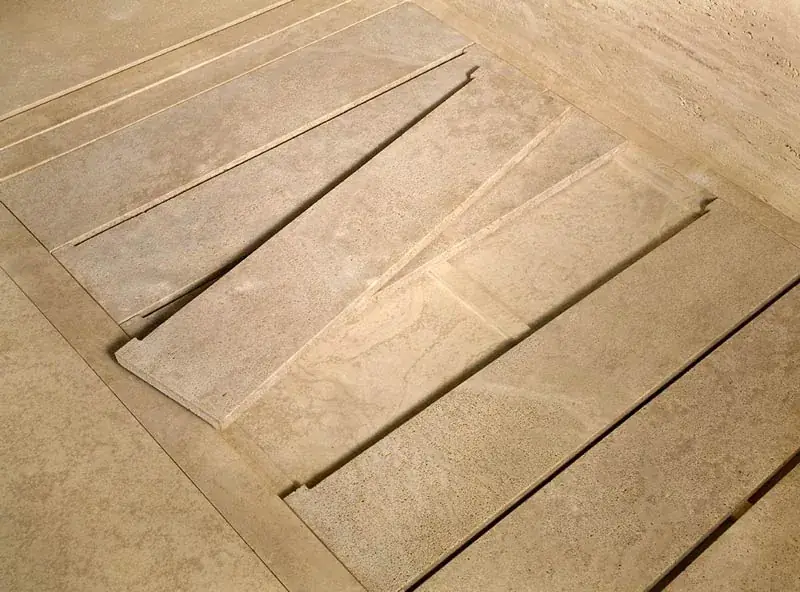
Platos de duchaPlato de ducha (a medida) para Spas CASULA - Vaselli
Para ocultar el drenaje bajo una superficie plana y segura, este moderno plato de ducha utiliza duelas de piedra natural
Su fabricación totalmente a medida permite alcanzar una continuidad material absoluta con el pavimento, eliminando resaltes o cambios de material. También disponible sobreelevado bajo pedido.
Al ser piezas registrables, facilitan el mantenimiento y la limpieza del sistema de evacuación.
Es la solución técnica idónea para proyectos de spa que buscan una estética monolítica a ras de suelo, garantizando facilidad de uso y mantenimiento.

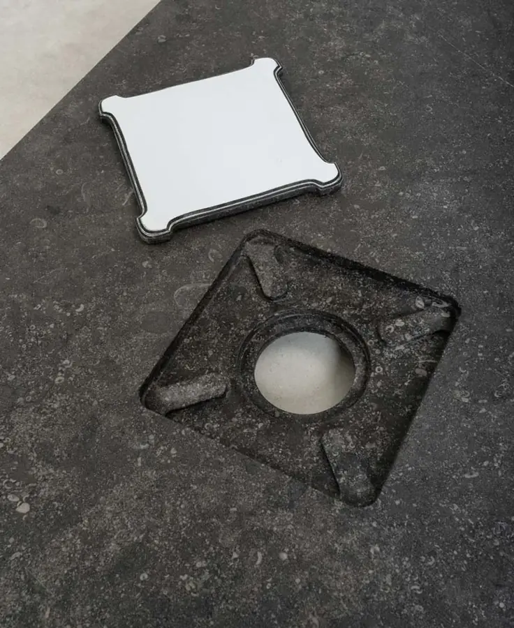
Platos de duchaPlatos de ducha de piedra natural a medida PIANO - Vaselli
Este plato de ducha monolítico permite tratar la piedra natural como una superficie continua, sin juntas ni rejillas metálicas en el diseño.
Su pendiente hacia una tapa integrada garantiza un drenaje eficiente manteniendo la lectura pura del material. El acabado arenado aporta seguridad antideslizante sin alterar la textura orgánica.
Al admitir instalación enrasada o elevada, resuelve la integración técnica en distintos niveles, facilitando la continuidad estética con el pavimento general en proyectos residenciales de alta gama.
 Platos de ducha
Platos de duchaPlato ducha CALIMA con grip invisible - Kaldewei
Disponible en 44 tamaños y 5 tonalidades, Calima destaca por su estabilidad y ligereza, facilitando el montaje en reformas complejas.
Su tratamiento antideslizante Clase C (Invisible Grip), además de garantizar seguridad, preserva la continuidad estética sin texturas rugosas.
Al ser recortable, permite ajustes precisos en espacios irregulares. Se recomienda su colocación a ras de suelo para conseguir accesibilidad total.
Sus radios de esquina mínimos y la sutil pendiente perimetral aseguran un apoyo óptimo para mamparas, mejorando la estanqueidad en proyectos minimalistas.
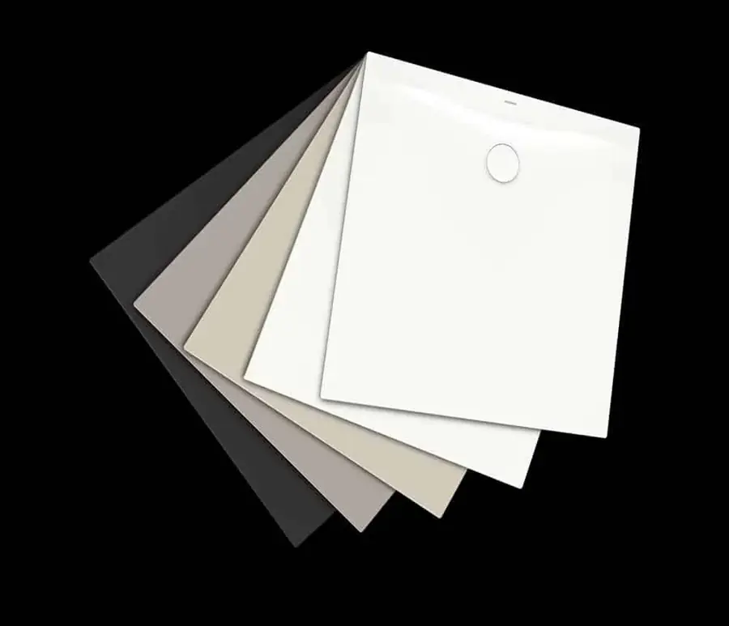
Platos de duchaPlato de ducha CALIMA With SOLIDLITE™ technology – Kaldewei
Plato de ducha ultrafino fabricado en SOLIDLITE™, hasta un 30 % más ligero que los compuestos convencionales, resistente, reciclable y fácil de transportar e instalar.
CALIMA se ofrece en 44 formatos y 5 tonalidades, con instalación a ras o casi a ras de suelo y corte a medida en fábrica.
Accesible por tres lados, incorpora INVISIBLE GRIP, antideslizante clase C sin textura visible, tapa de desagüe desplazada y perímetro de retención para drenaje eficiente.
Garantiza una alta resistencia térmica, química y a impactos.
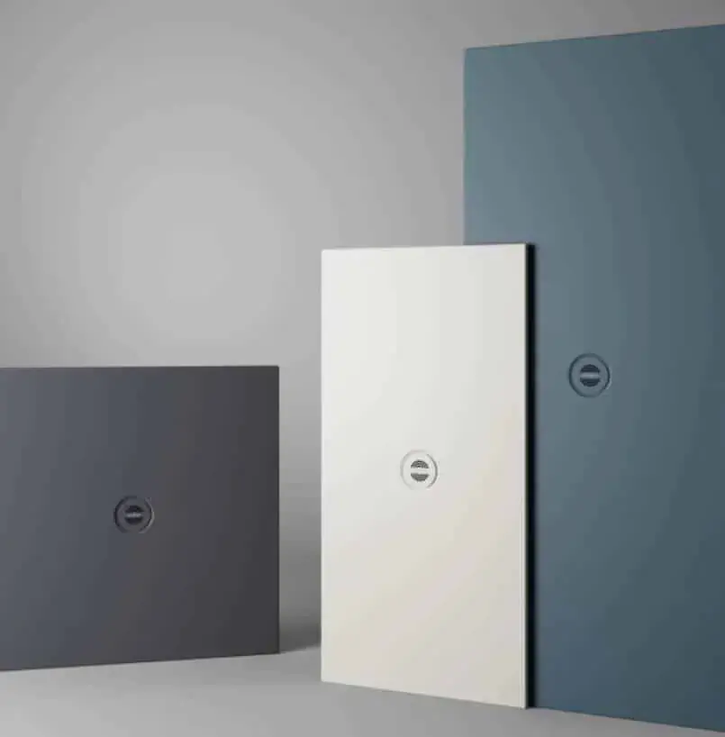
Platos de duchaPlatos de ducha de cerámica - Azzurra
Azzurra presenta su nueva colección de platos de ducha en cerámica, una línea caracterizada por la atención por el detalle, con una estética simple y genuina.
El equilibrio perfecto entre diseño, calidad y tecnología. Todos ellos equipados con la innovadora tecnología SOLODUE, que asegura un drenaje eficiente y una superficie antideslizante para mayor seguridad.
Con esta colección, una vez más, la marca italiana ofrece soluciones versátiles, en multitud de variedades y tamaños, que se adaptan fácilmente a cualquier baño.
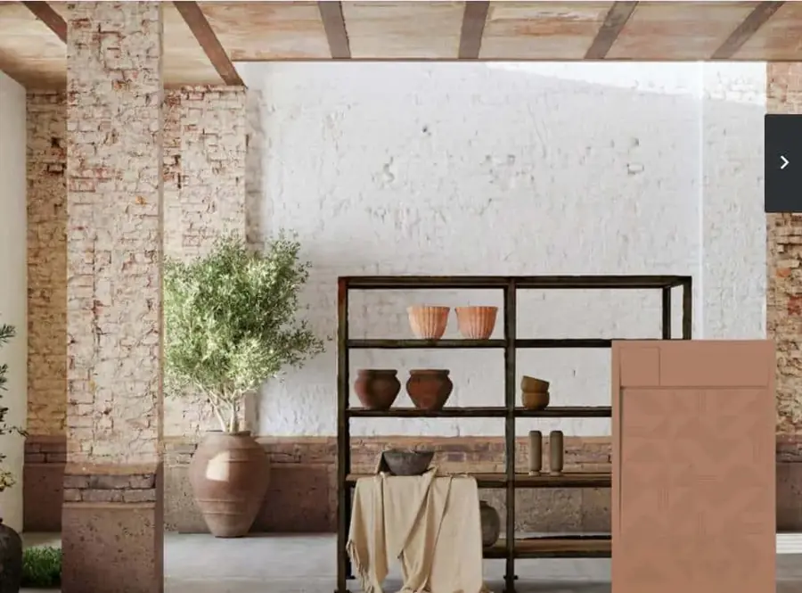
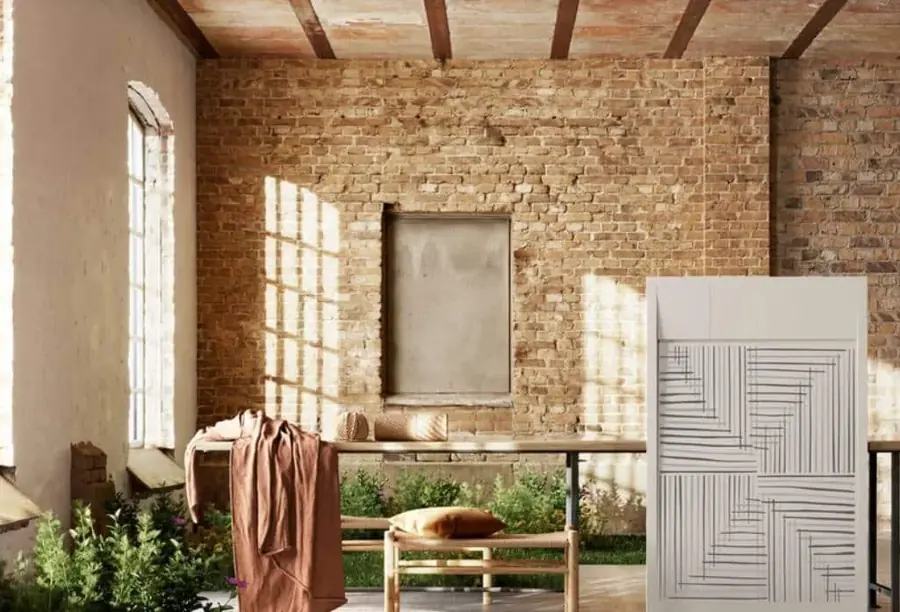
Platos de duchaPlato de ducha Iconik Tribute - Hidrobox
Iconik de Hidrobox es una colección única de platos de ducha que celebra la artesanía mediterránea, evocando la sillería, cestería, alfarería y tejeduría.
La marca lanza un nuevo modelo de plato de ducha en 12 estampados diferentes. Cada una de sus piezas consigue capturar la esencia de estos oficios tradicionales, fusionando diseño contemporáneo con técnicas ancestrales.
Su estética invita a detenerse, a apreciar la calidad de los pequeños detalles y los materiales, transformando la rutina de baño en un momento de desconexión.
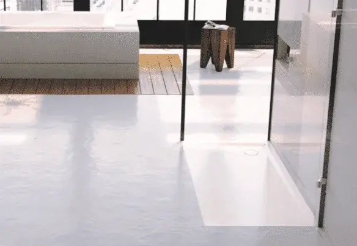
Platos de duchaPlato de ducha enrasado Superplan – Kaldewei
Kaldewei se renueva y actualiza su clásico plato de ducha Superplan. Una apuesta segura para cualquier tipo de baño que busque practicidad en su mantenimiento y armonía visual: residencias, hoteles, etc.
Sus modelos se caracterizan por su condición enrasada, para duchas sin juntas, que encajan a la perfección en cualquier espacio para el baño. Particularidad que garantiza un apoyo seguro y una experiencia de uso satisfactoria.
Ahora con bordes más preciosos y un aspecto más actual, la redefinición de su diseño eleva la estancia a otro nivel. Haciendo honor a su lema “hacer de lo bueno lo mejor”, la empresa está en constante evolución incorporando mejoras para ofrecer productos que son soluciones.
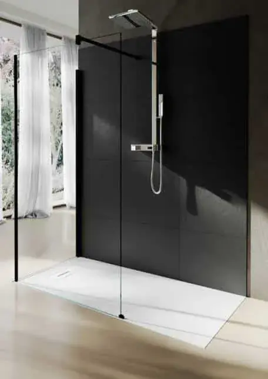
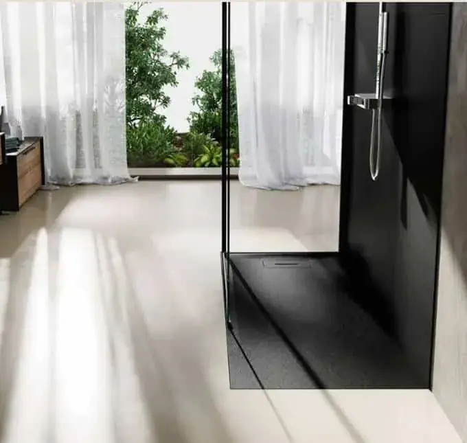
Platos de duchaPlatos de ducha efecto piedra Novosolid - Novellini
La marca, fiel a su estilo cálido y distendido, apuesta por esta colección efecto piedra buscando crear espacios donde relajarse después de la intensidad y el ritmo frenético de nuestra rutina diaria.
La forma de los platos de ducha permite que encajen a la perfección con cualquier superficie, camuflándose con el suelo y facilitando el acceso a la zona de baño.
La colección está disponible en cuatro tonos e infinidad de medidas modulables, adaptándose a cualquier gusto y necesidad.
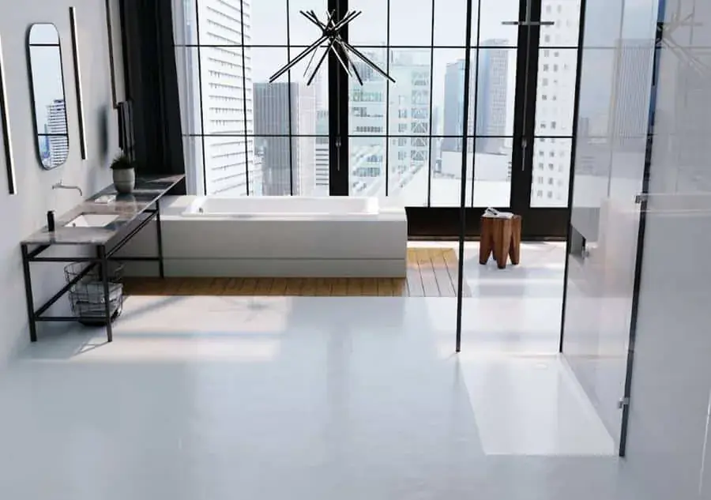
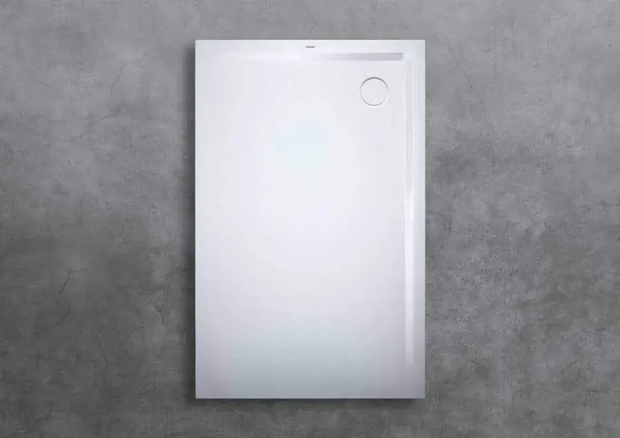
Platos de duchaPlatos de ducha enrasado Superplan - Kaldewei
Kaldewei innova con un relanzamiento de su mítico plato de ducha “Superplan”. Hecho con acero vitrificado, lo que garantiza un buen mantenimiento, su diseño combina elegancia y sostenibilidad.
Un plato de ducha que se distingue por su acceso nivelado. Los bordes de dos de sus lados coinciden con el nivel del suelo, haciendo de la pieza un elemento más de decoración en cualquier baño.
Esta nueva versión destaca por incorporar mejoras en practicidad y estética, como la reducción de su profundidad en un 50% respecto al modelo anterior, con un máximo de 25 milímetros.
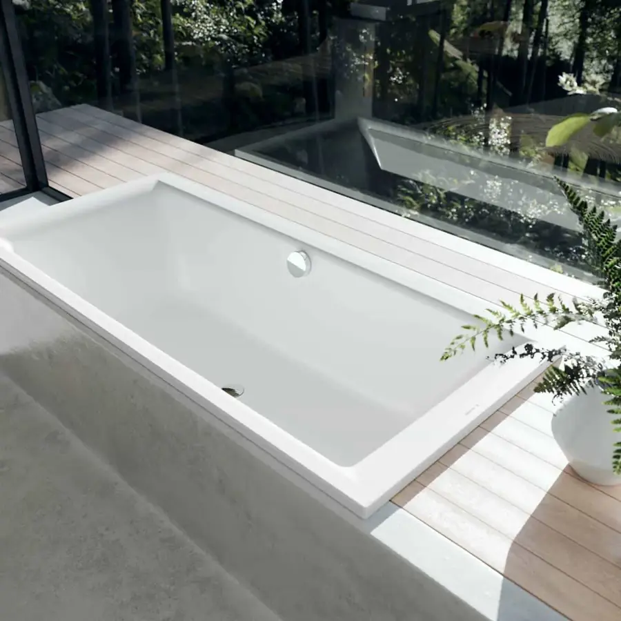
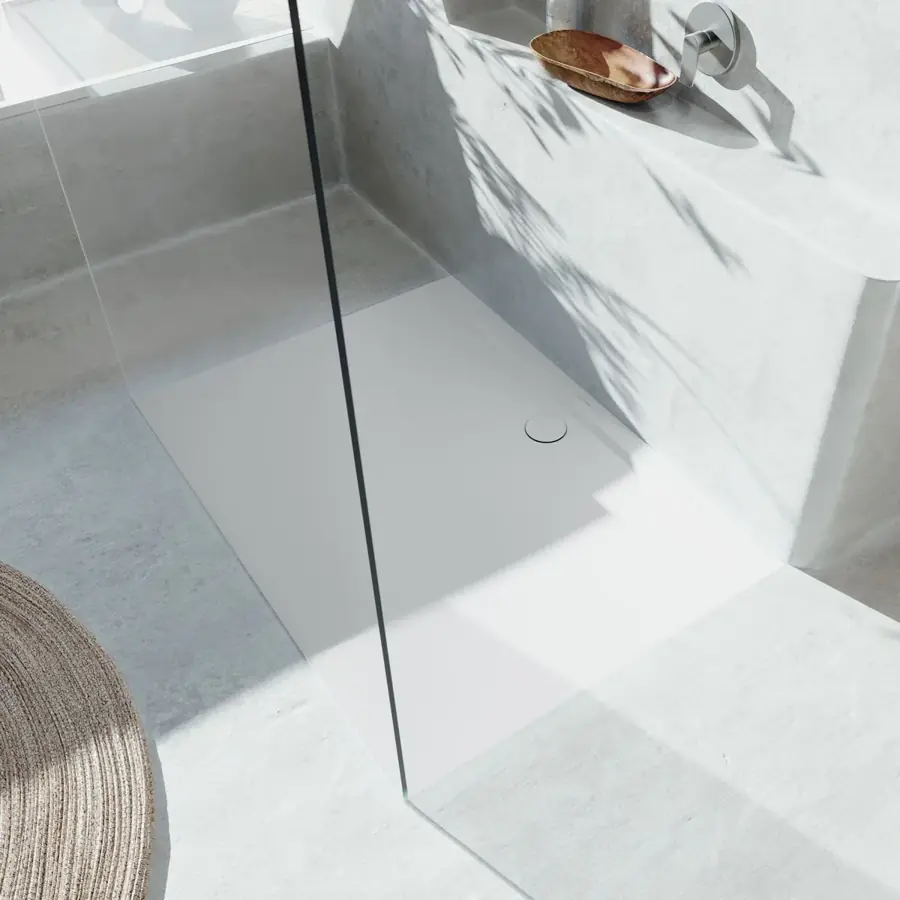
Platos de duchaPlatos de ducha, bañeras y lavabos ecológicos Nature Protect - Kaldewei
Kaldewei lanza Nature Protect, una edición limitada de productos premium en acero ecológico y con menor huella de carbono en su producción, para una planificación sostenible del baño y combinar lujo con sostenibilidad.
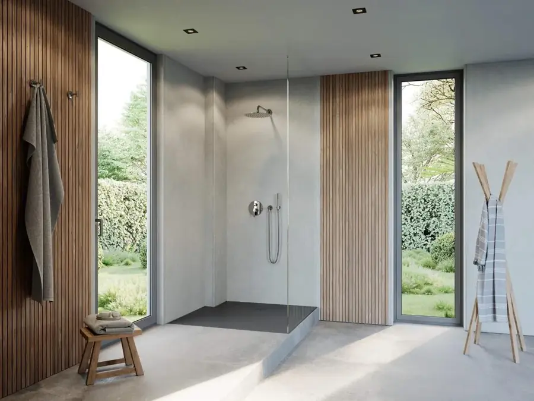
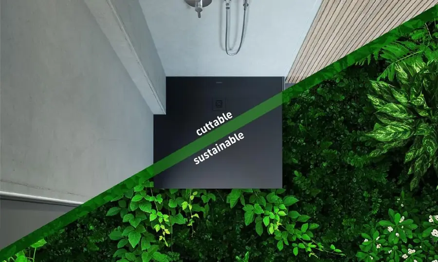
Platos de duchaPlato de ducha sostenible - Duravit
DuraSolid® Nature es un material recién desarrollado que se caracteriza por su fácil manejo, superficie no porosa, resistencia al deslizamiento, robustez y resistencia a los rayos UV, y bajo peso. Los platos de ducha fabricados con DuraSolid® Nature son fáciles de transportar y al final de su vida útil, pueden ser reciclados.
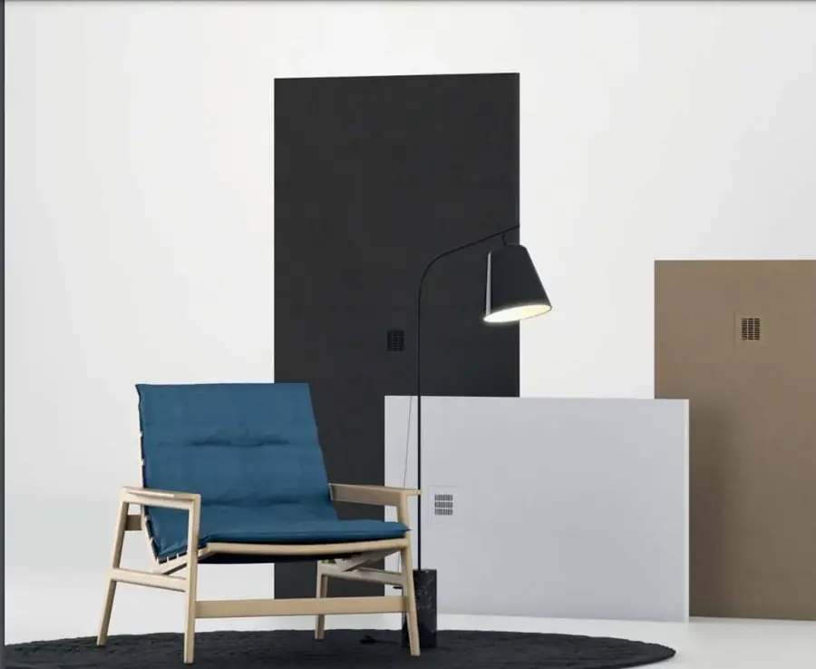
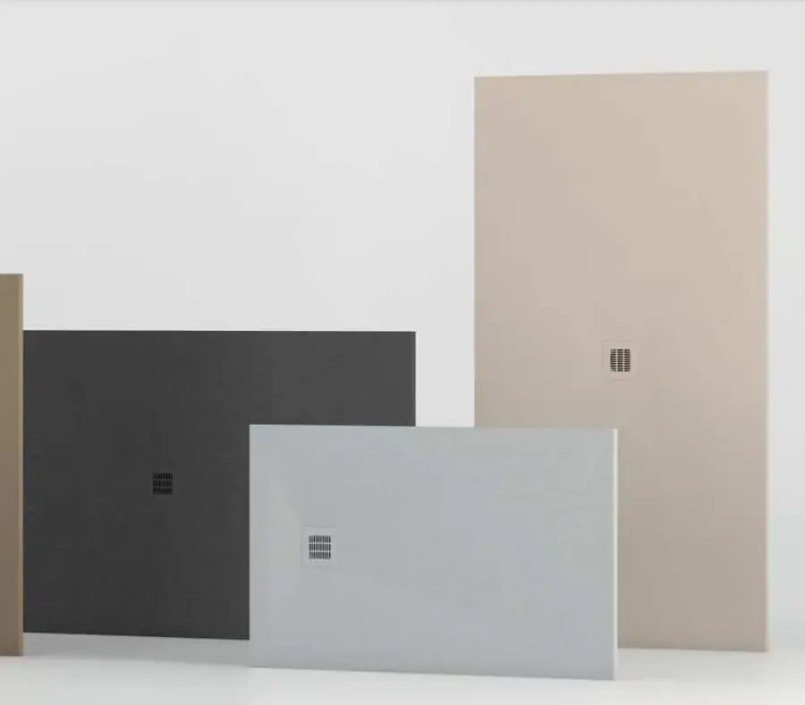
Platos de duchaPlatos de ducha con texturas One – Hidrobox
Hidrobox le da un giro a ONE y crea dos líneas: la original, textura Pizarra y la nueva textura Microtex, que consigue llevar a otro nivel la experiencia de ducha, tanto a nivel estético como funcional.
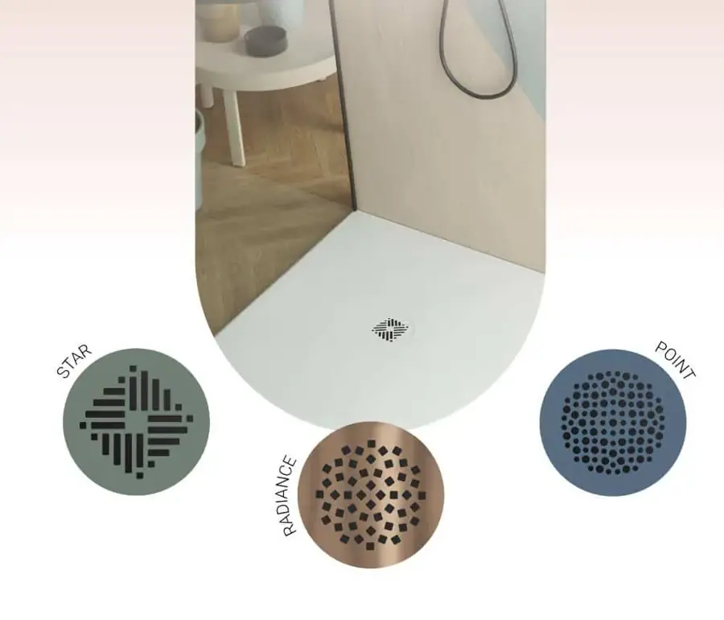
Platos de duchaRejillas para platos de ducha – Hidrobox
Hidrobox presenta sus nuevas rejillas de platos de ducha en tres diseños distintos, de infinidad de colores, para poder personalizar tu espacio de baño. Un punto de originalidad y funcionalidad para tu plato de ducha.
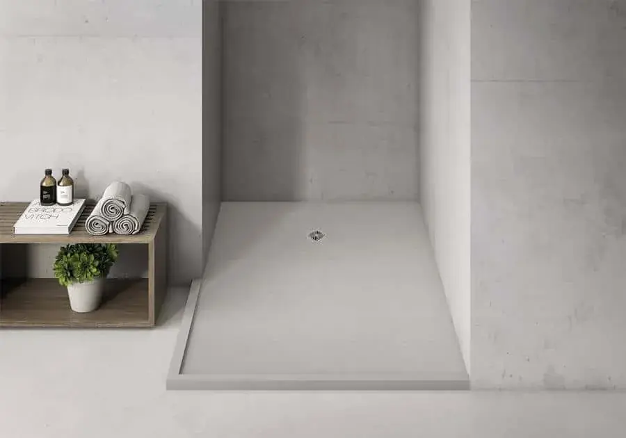
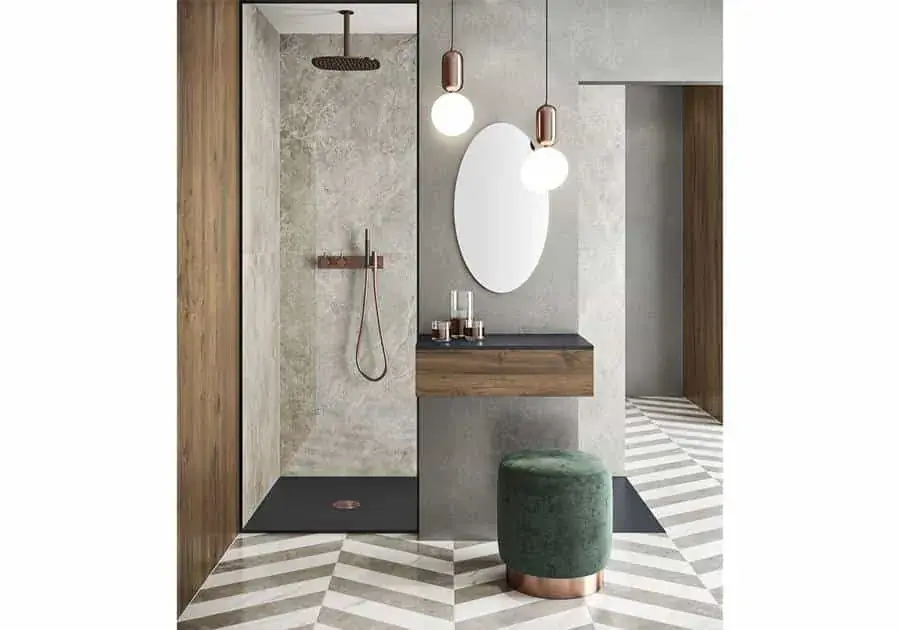
Platos de duchaPlato de ducha Neo Plus – Hidrobox
Un plato de ducha que trasciende su categoría, dada su alta funcionalidad, gracias a la experiencia acumulada en la fabricación de platos de ducha por parte de Hidrobox.
Neo Plus es un plato de ducha de altísima calidad, de diseño inigualable, para hacer de tu espacio de baño un lugar donde estar a gusto.
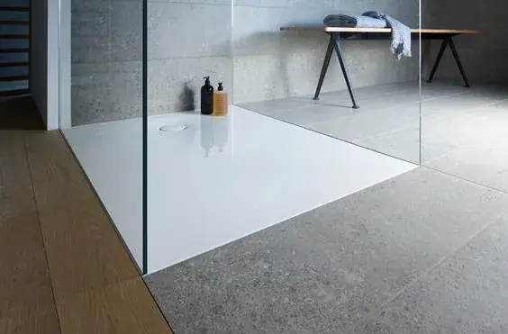
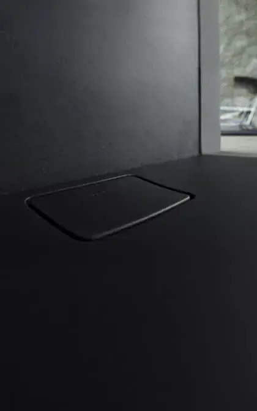
Platos de duchaSeguridad en el baño – Duravit
Duravit apuesta por la seguridad en el baño, espacio en el que suelen habitar elementos resbaladizos y húmedos. Pero no acaba aquí: ha conseguido que su estética sea tan elevada como la seguridad que ofrecen.
 Platos de ducha
Platos de duchaPlato de ducha Planeo para el baño – Villeroy&Boch
De diseño minimalista, con Planeo, Villeroy & Boch ofrece una experiencia única para el tacto. Una colección de platos de ducha que sorprende por sus genuinas innovaciones, poco frecuentes en este tipo de piezas.
Incorpora tecnología RockLite, acabada con poliuretano de alta calidad. Platos de ducha extremadamente estables y fáciles de transportar; tanto es así, que pueden ser instalados por una sola persona.
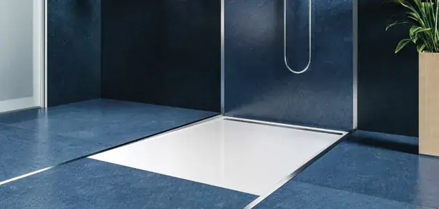
Platos de duchaPlatos de ducha de baño Nexsys – Kaldewei
Una novedad de alto nivel que ha sido calificada de “revolucionaria”. KALDEWEI reinventa el plato de ducha con Nexsys, con una propuesta de diseño enrasado y de desagüe rápido y sencillo, incluso en el montaje.
Un plato de dicha innovador que se presenta en 17 colores y 20 dimensiones, para que todos los espacios de baño puedan disfrutar de su presencia.
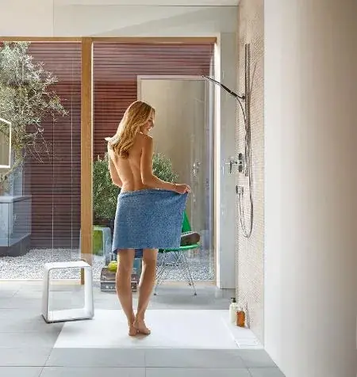
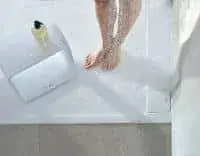
Platos de duchaPlatos de ducha de cuarto de baño P3 Comfort – Duravit
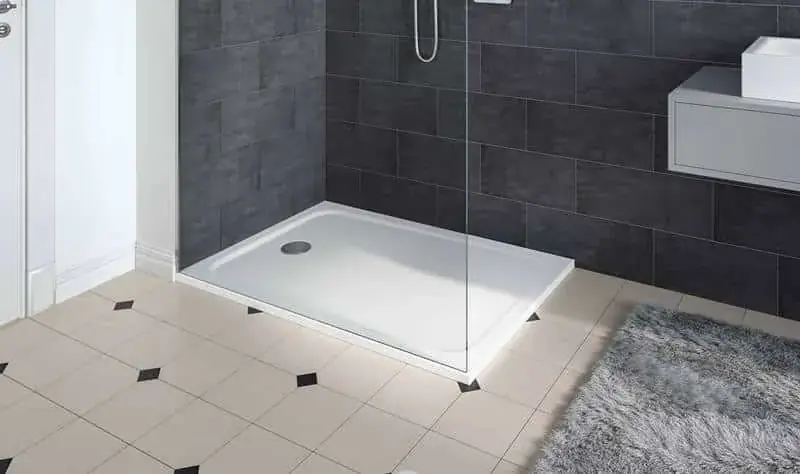
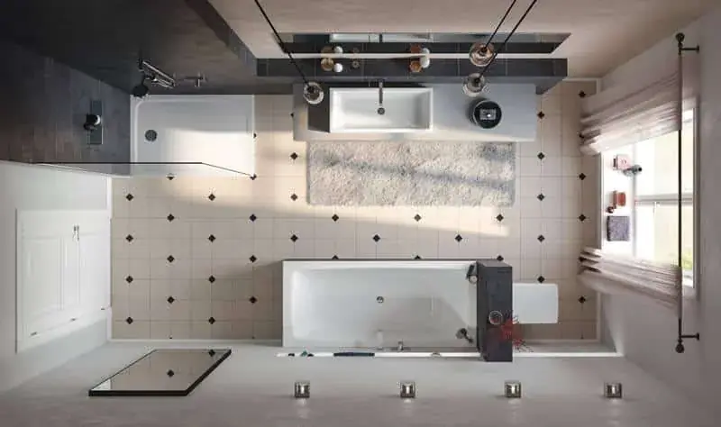
Platos de duchaPlatos de ducha extraplanos para el baño Cayonoplan - Kaldewei
Kaldewei, una firma líder comprometida desde hace años con la innovación, la atemporalidad de sus diseños para el cuarto de baño, la estética y la calidad de los mismos, acaba de lanzar al mercado sus nuevos platos de ducha enrasados Cayonoplan.
Este plato de ducha, disponible en hasta 19 medidas diferentes, que facilitan su incorporación en casi cualquier cuarto de baño, destaca entre otros aspectos, por su desagüe lateral, y el soporte extraplano, gracias al que todo el proceso de instalación se simplifica al máximo.
Junto a sus diecinueve medidas diferentes, también lo tienes disponible en dos alturas disparejas, de 32 y 40 mm, y lo puedes instalar tanto a ras de suelo como sobre azulejos.
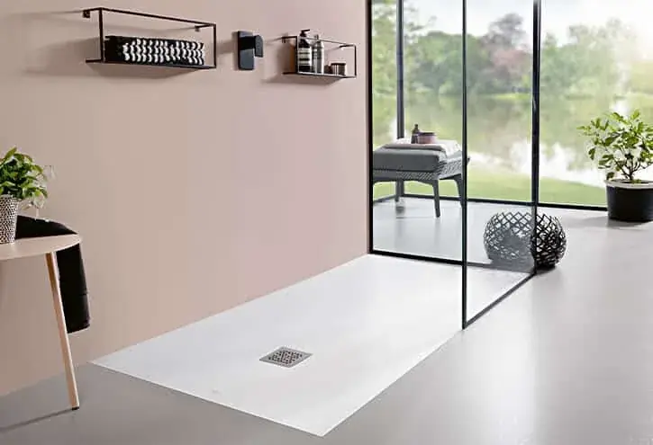
Platos de duchaAdornos de platos de duchas – Villeroy&Boch
Gracias al desarrollo de una moderna tecnología denominada Vi Print, ahora ya puedes incorporarle adornos a los platos de ducha Subway Infinity de Villeroy & Boch. Dispondrás de una estética homogénea en la que la unión entre plato de ducha y pavimento queda prácticamente oculta a la vista.
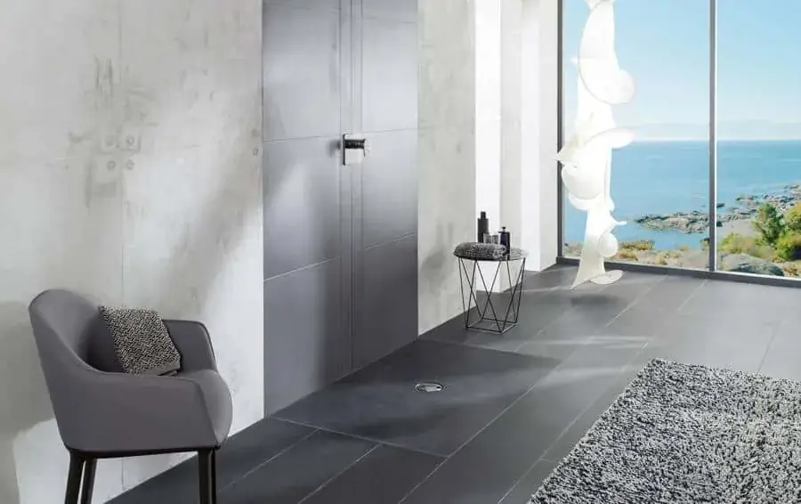
Platos de duchaPlatos de ducha a medida para baño - Villeroy & Boch
En su afán por continuamente sorprender a arquitectos e interioristas como novedosos diseños para el baño moderno y actual, Villeroy & Boch nos presenta una nueva colección de platos de ducha a medida y antideslizantes. Squaro Infinity y Subway Infiniti están fabricados en gres, y además de en un tamaño estándar, también se pueden adquirir adaptándolos a la medida que precises.
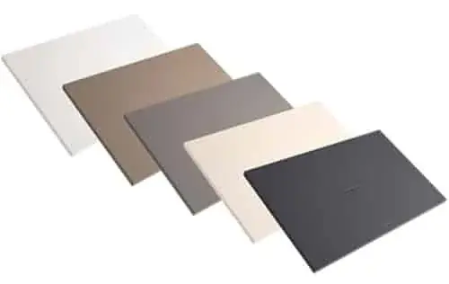
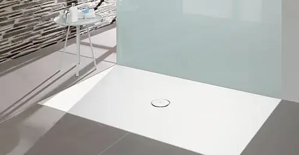
Platos de duchaPlatos de ducha Subway infinity - Villeroy & Boch
Hablar de Villery & Boch es hacerlo de una marca consolidada en el mercado del baño, que constantemente lanza al mercado nuevas e interesantes novedades.
Esta vez nos hacemos eco del nuevo plato de ducha Subway Inifinity sin borde, premiado con el iF Design Award 2016, fabricado en cerámica y a media, el cual dispone de opciones en tamaños individuales capaces de adaptarse a los espacios y baños más difíciles como aquellos que incluyen columnas, esquinas o incluso salientes.
Ahora además, dado que estos platos para ducha incorporan adornos ViPrint, tienes la opción de personalizar y decorarlos para que combinen con los azulejos para suelo que esta firma también dispone, con los que podrás hacer una perfecta instalación a ras de suelo
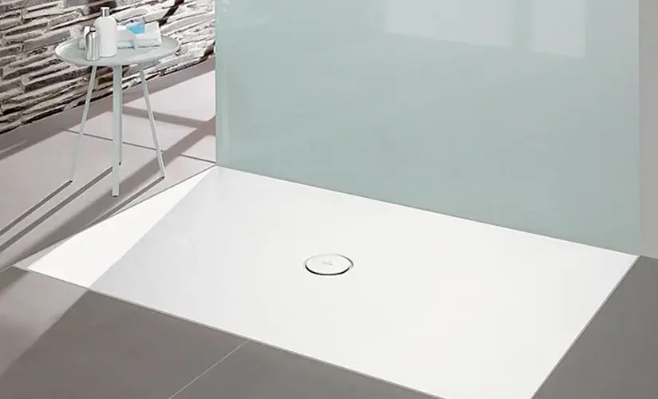
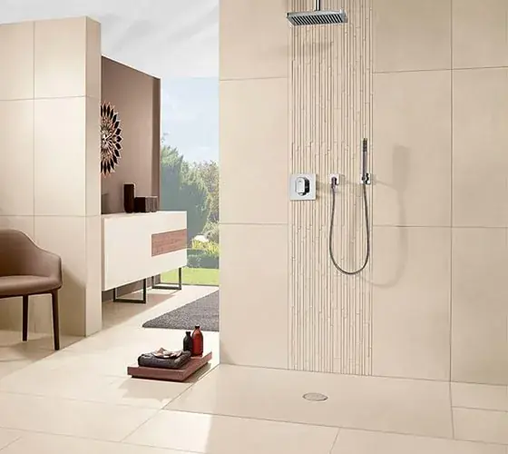
Platos de duchaPlatos de ducha para baños Subway Infinity - Villeroy & Boch
De la mano de Villeroy te proponemos este flexible plato de ducha de gress llamado Subway Infinity, el cuál puedes cortar en la medida que necesites. Disponible también en tamaño individual, su diseño le permite adaptarse a la perfección a los espacios más complejos. La incorporación de las decoraciones ViPrint, también te dan la opción de que diseñes este plato de ducha de manera que coincida con los azulejos que tengas o pongas en el suelo del baño.
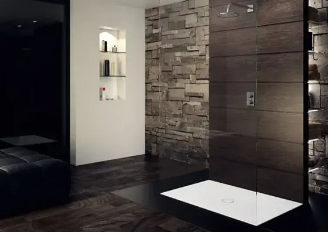
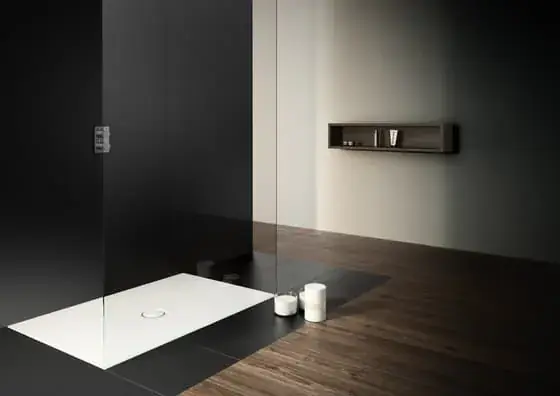
Platos de duchaPlatos de ducha Scona - Kaldewei
Un plato de ducha, inspirador para los sentidos, con el esta prestigiosa marca de accesorios para el cuarto de baño más moderno y actual, amplia su colección “Ambiente”. Instalable a ras de suelo, fabricado con acero esmaltado y con la última tecnología disponible, la grandísima calidad de este plato de ducha permite diseñar duchas en las que el bienestar está más que garantizado.
Su exterior geométrico que contrasta con algún detalle redondeado, su suave pendiente y su desagüe central, generan una harmonía sensual para la vista.
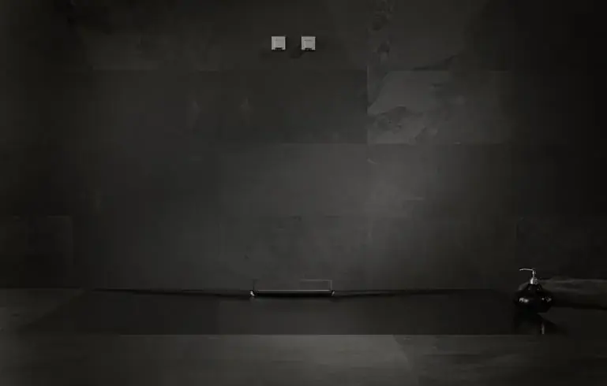
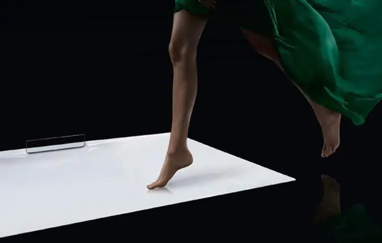
Platos de duchaPlato ducha para baño Xetis - Kaldewei
Los cuartos de baño de viviendas lujosas, exigen productos top de última generación en lo que diseño y funcionalidad se deben fundir a la perfección. Con miras a esta demanda tan acuciante, nace un nuevo plato de ducha de última generación de la marca Kladewei. Los platos de ducha en acero vitrificados Xetis, incluyen una zona de ducha a ras de suelo que se integrará con armoniosa perfección en el suelo de cualquier cuarto de baño, y que te ofrecerá el máximo confort. Un diseño contemporáneo que sienta nuevas bases en el interiorismo del cuarto de baño de lujo.
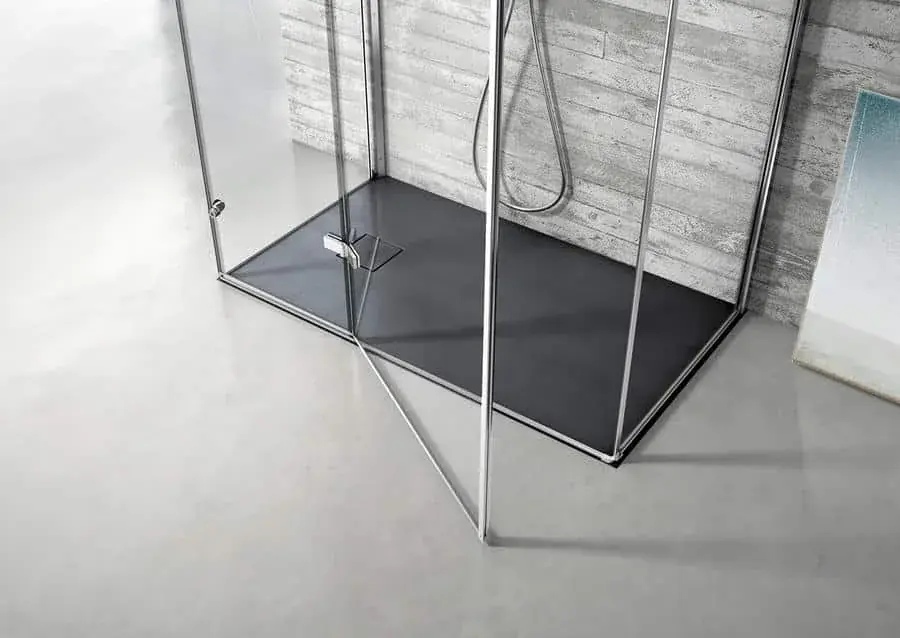
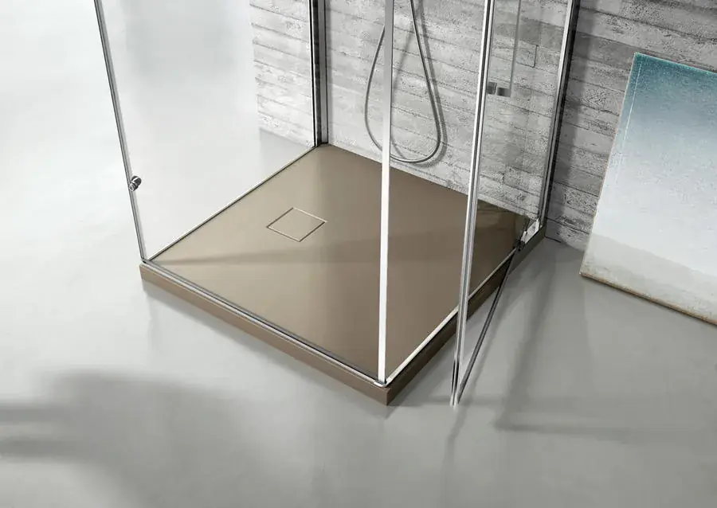
Platos de duchaTecnogel para platos de ducha, un material novedoso, vanguardista y versátil
para Platos de Ducha, desarrollado por Disenia
¿Quieres darle a tu cuarto de baño un toque informal y elegante? ¿Eres interiorista o arquitecto, estás desarrollando un nuevo proyecto, y buscas una alternativa con opciones de personalización?. Los 6 colores de JOIN te lo aportarán, y además tendrás diversas opciones de combinaciones posibles. Instalables a ras de suelo o en apoyo, estos platos de ducha también te permiten personalizaciones en función del proyecto que realices.